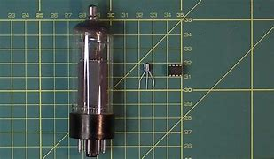

A Bell Laboratories inventava o transístor um novo componente que apresentava inúmeras vantagens em relação às antigas válvulas e o mesmo foi capaz de aumentar muito o processamento de dados.
Em 1952 surgiu um novo componente que apresentava inúmeras vantagens em relação às antigas válvulas: ele tinha características como menor aquecimento, maior poder de cálculo e um consumo de energia bem menor - com o adicional de que não necessitava de tempo para aquecer. A Bell Laboratories inventava o transístor. Os cálculos passaram a ser medidos de segundos para microssegundos. As linguagens utilizadas para esses computadores eram normalmente a Fortran, Cobol ou Algol. A partir desse momento, devido à maior facilidade e pratica do transístor, muitos modelos de computador surgiram.
O primeiro modelo de computador 100% transistorizado foi o Tradic, da Bell Laboratories. Outro modelo dessa época era o IBM 1401, com uma capacidade memória base de 4.096 bytes operando em ciclos de memória de 12 microssegundos. A instalação de um IBM 1401 ocupava uma sala e o tamanho dos computadores ainda era bastante grande. Existiam também outros modelos, como o sofisticado IBM 7094. O IBM TX-0, de 1958, tinha um monitor de vídeo de alta qualidade, além de ser rápido e relativamente pequeno.
Nokia Bell Labs (originalmente chamada AT&T Bell Laboratories and Bell Telephone Laboratories) é uma empresa de pesquisa industrial e desenvolvimento científico, subsidiária da empresa finlandesa Nokia. Sua sede é localizada em Murray Hill, Nova Jérsia, com outros laboratórios localizados ao redor do mundo.[1][2] A Bell Labs desenvolveu uma série de tecnologias consideradas revolucionárias desde comutadores telefônicos, cabos de telefone, transístores, LEDs, lasers, a linguagem de programação C e o sistema operativo Unix.